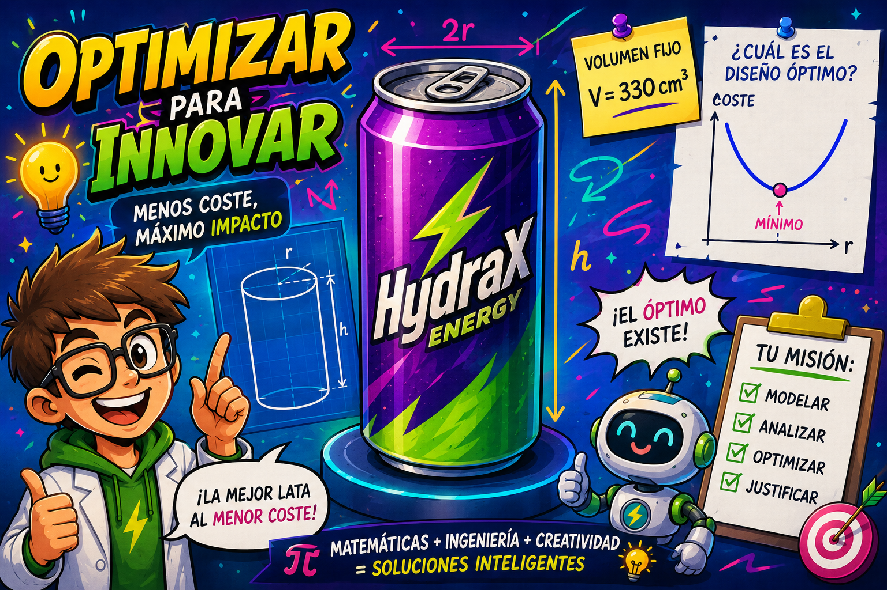

¡Bienvenido/a al Proyecto HydraX!
En esta Situación de aprendizaje no serás un mero estudiante de matemáticas, sino un analista y consultor de diseño industrial. Tu misión será resolver un problema crítico de sostenibilidad e ingeniería financiera para una planta embotelladora real: rediseñar las dimensiones de una lata de refresco estándar para minimizar el coste de aluminio de su fabricación, manteniendo intacto su volumen de 330 ml.
A través de este entorno interactivo de eXeLearning, te guiaremos en la aplicación del cálculo diferencial y la optimización. Utilizarás el modelado analítico y herramientas dinámicas de software, como GeoGebra, para justificar tus decisiones de diseño en tres dimensiones. Toda esta investigación, junto con las gráficas y las conclusiones analíticas de tu equipo, se estructurará en un informe técnico profesional maquetado en Canva, el cual os servirá de soporte visual para defender vuestras decisiones ante un tribunal técnico. La optimización no es solo una herramienta matemática; es la clave para la eficiencia de recursos en el siglo XXI.

Presentación y descripción del proyecto
Título descriptivo: Optimizando: un mundo eficiente.
Centro de interés o temática: Se aplicarán las derivadas para representar funciones y resolver problemas reales: calcular el mínimo gasto de material en la fabricación de un envase, maximizar beneficios, minimizar costos, etc.
Nivel al que va dirigido: 1º bachillerato (ciencias y tecnología)
Temporalización aproximada: 8 sesiones
Materia o materias implicadas: Matemáticas I
Idioma: Castellano
Descripción general de lo que se pretende que el alumnado aprenda o trabaje: el alumno trabajará las aplicaciones de las derivadas en situaciones reales donde es necesario calcular máximos o mínimos (áreas, volúmenes, costes, beneficios, etc.). Además, se ayudará de Geogebra para representar funciones y verificar los resultados obtenidos mediantes análisis algebraico.
Justificación de los elementos anteriores: La tecnología, Geogebra en este caso, debe de ser una herramienta de verificación, no de sustitución. Así se tratará que el alumno use el software y no como poseedor de la verdad absoluta, ya que una de las funciones que le propondré representar será f(x)=sin(x)/x.
Además, muchas veces nuestros alumnos nos preguntan “profe, ¿esto para qué sirve?”. En esta situación de aprendizaje verán como lo abstracto puede modelizar lo práctico (aparentemente la derivada no tiene nada que ver con el área de un campo de cereales, por ejemplo). Finalmente, se utilizan representaciones múltiples (con Geogebra y análiticamente) lo que permite utilizar pautas DUA y atender a la diversidad.